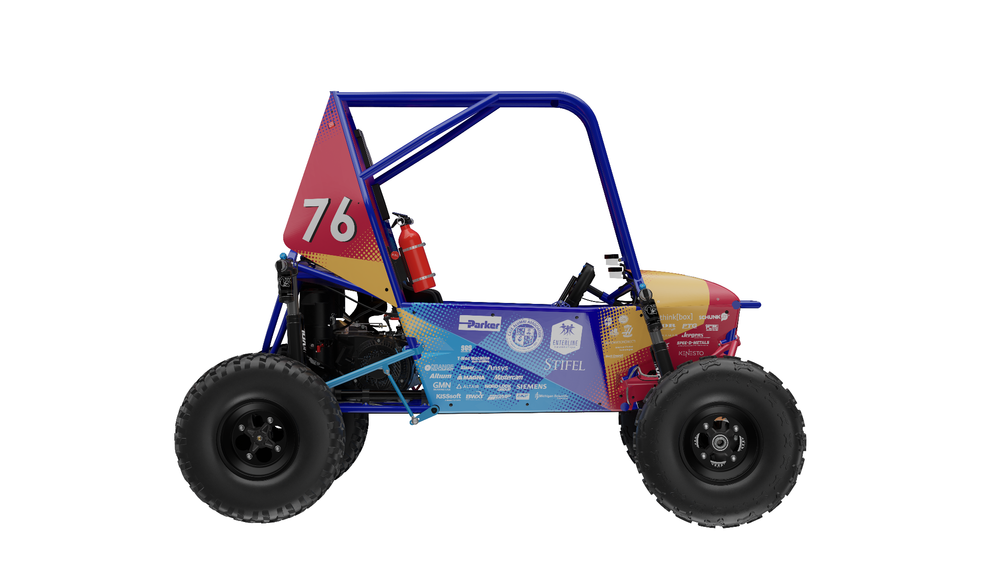
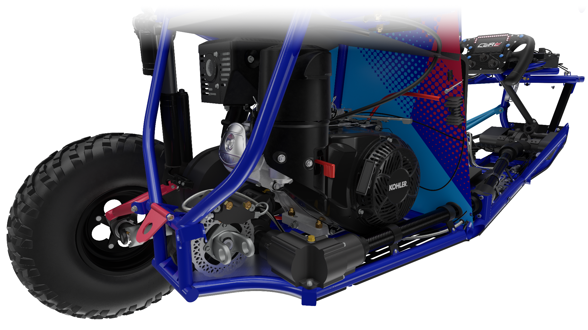
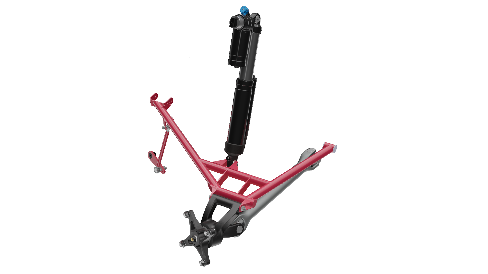
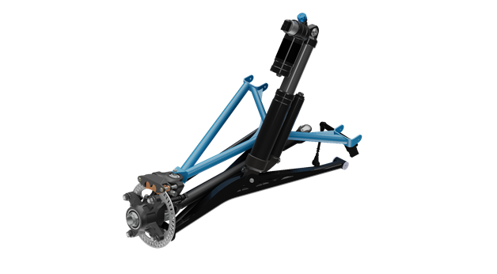

SR25
Team Captain for CWRU Motorsports' 2025 Baja SAE vehicle. I led a 50+ member team through design, manufacturing, assembly, testing, and competitions for a full year project cycle.
Delivered the team's first ever 1st place endurance finish.
Leadership Board
SR25 was organized around clear role ownership across executive, operations, and subsystem leads. My role was to keep the full vehicle cycle moving while helping the team make practical tradeoffs.
Executive Board
- Team CaptainSimon Merenstein
- Technical DirectorLiam Flanagan
- Logistics LeadAnish Khot
- Membership LeadAmy Budzichowski
- Finance LeadArnav Manu
Operations Board
- Frame LeadDevin Korybski
- Front Drivetrain LeadXavier Nye
- Rear Drivetrain LeadAmmar Ali Asghar
- CNC LeadBrendan Flanagan
- Suspension LeadDaniel Clare
- Brakes and Throttle LeadAuston Govender
- Test Engineering LeadJordan Haight
- Electronics LeadUzair Syed
- Race LogisticsCollin Lorenzen
- Manufacturing CoordinatorShelley Wei
Goals, Analysis, Test
The SR25 cycle connected competition goals to subsystem requirements, design reviews, manufacturing readiness, vehicle testing, and competition execution.
Set full-vehicle priorities
Aligned subsystem leads around reliability, serviceability, manufacturability, driver confidence, and competition performance.
Review designs against real loads
Used measured vehicle data, CAD packaging, subsystem calculations, and FEA reviews to guide design decisions before parts were built.
Turn test days into fixes
Coordinated assembly, shakedown, braking, steering, suspension, and endurance-style testing so issues could be found before competition.
Vehicle CAD Renders





